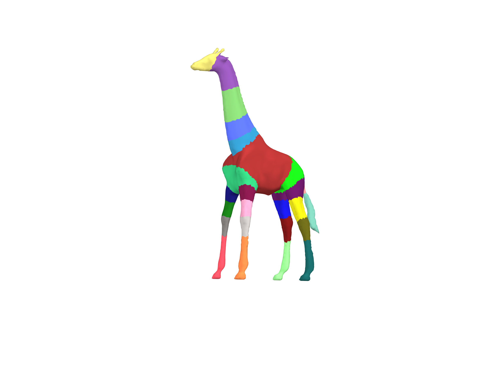
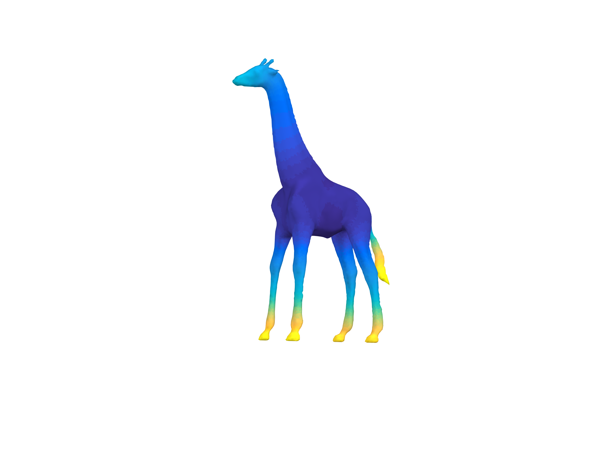
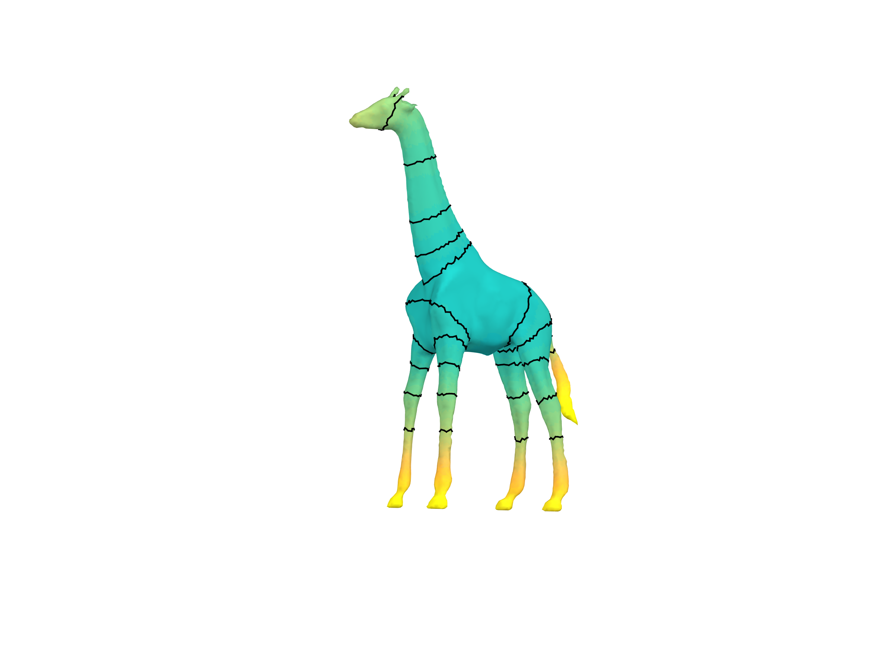
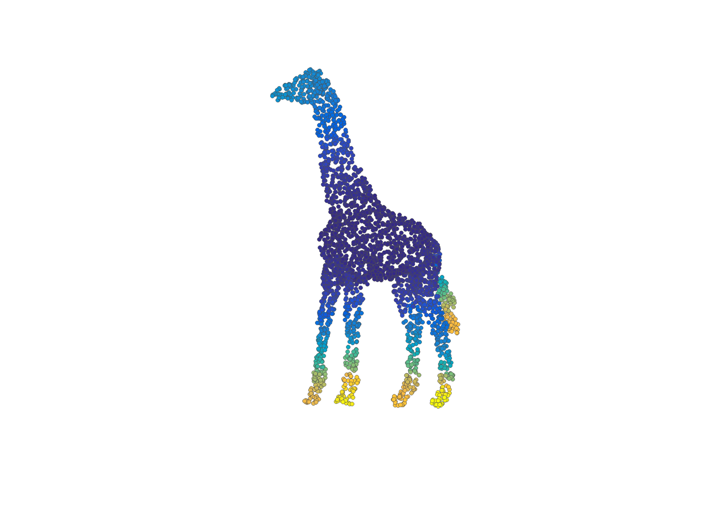
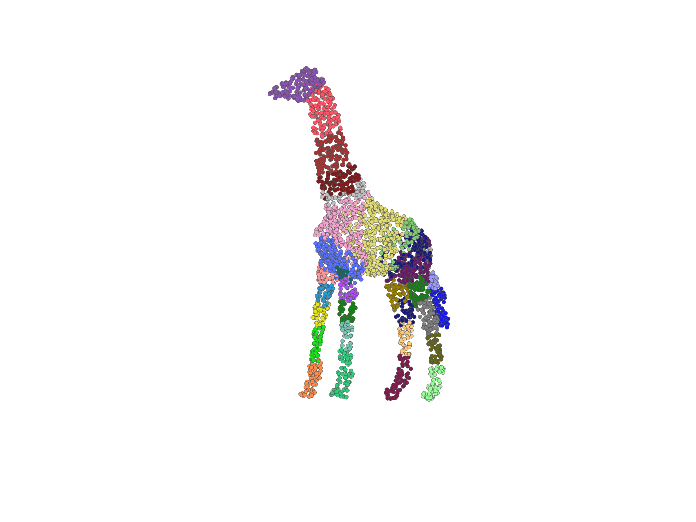
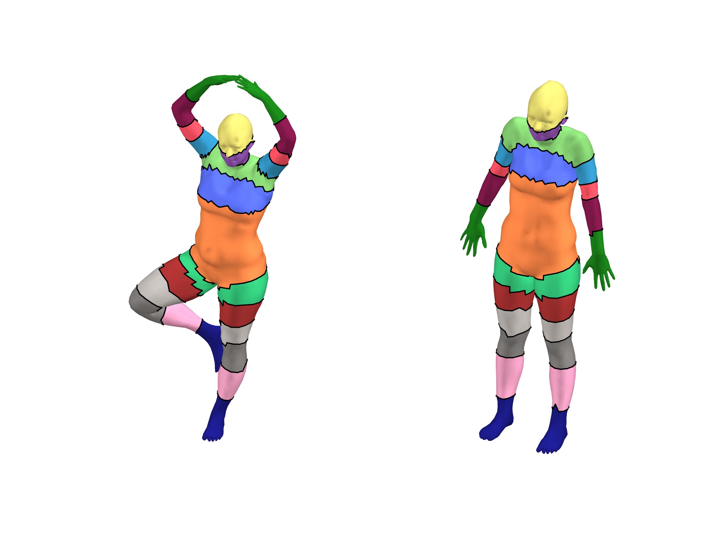
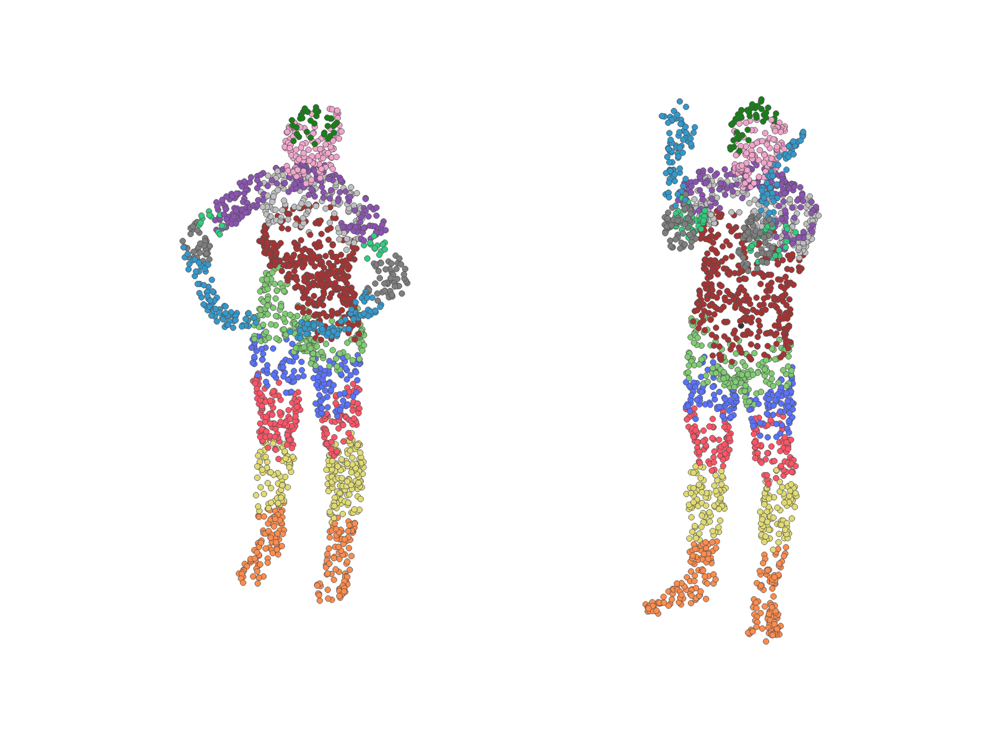

Code and Data
This is a collection of code and data from different projects I have worked on. Most of it is hosted on GitHub.
Segmented Shapes Dataset
This is a collection of segmented shapes that was used in the paper SHED: Shape Edit Distance for Fine-grained Shape Similarity (SIGGRAPH ASIA 2015). The collection is based on some categories of the COSEG dataset. We enriched these categories to generate more variations within each set. We also provide a segmentation of each shape generated using Approximate Convexity Analysis.
There are four categories:
For each shape there is an .off file, a segmentation file .seg, and a thumbnail image. The .seg file contains a list of segment ID for each vertex in the shape. Download the entire collection here.
Shape Edit Distance
The code of SHED: Shape Edit Distance for Fine-grained Shape Similarity can be found in the link above or on the project page.
Mesh Sampling
A small matlab package to create a point cloud from a given triangular mesh by uniformly sampling points over the faces. The output contains both point locations and normal information (taken from the face the point is on). Download here.
SPRender:
Rendering for Shape Processing in Matlab
SPRender package provides an easy tool for rendering 3D shapes directly from matlab.
In shape processing publications, it is often necessary to display function values, segmentation, or feature points over the 3D shape. However, not all researchers have the knowledge or artistic skills to produce nice looking renders. This package renders nice looking images and does not require any external dependencies or compiled mex files - so it is super easy to use.
The code for this package can be found here. The package supports the following types of renders and more (click to zoom):
|

A segmented shape. |
A shape with segment outlines. |
|

A real-valued function over a shape. |

A function and segment outlines. |
|

A function over a point cloud. |

A segmented point cloud. |
|

Comparing two segmented shapes. |

Comparing two segmented point clouds. |
Ray Tracing Exercise
I created a simple ray tracing exercise for the Computer Graphics course at Tel Aviv University. It is implemented in Java. In the link you can find the instructions, skeleton files and examples of the desired output. If you are interested in the complete code, please contact me by email.